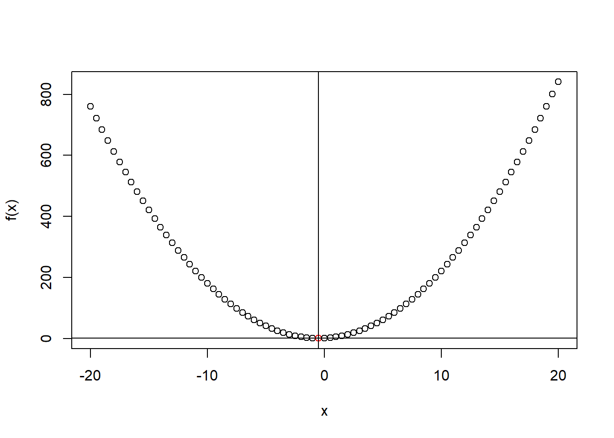
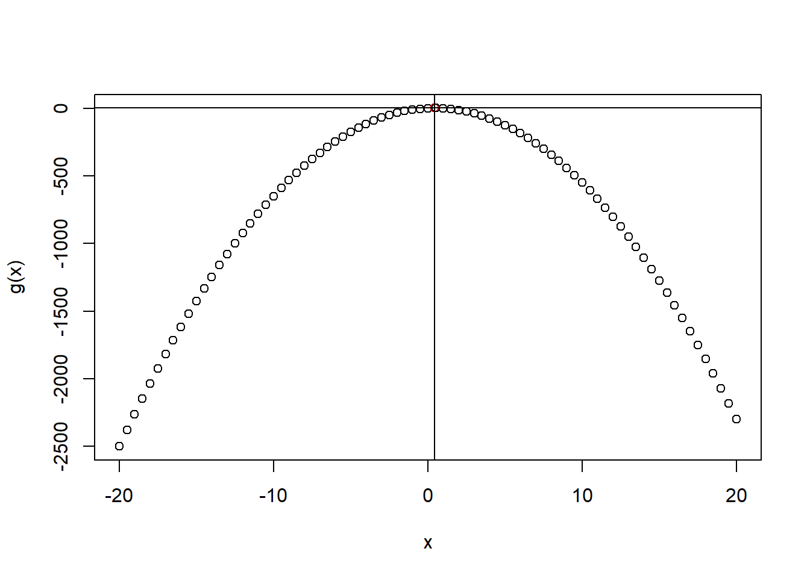
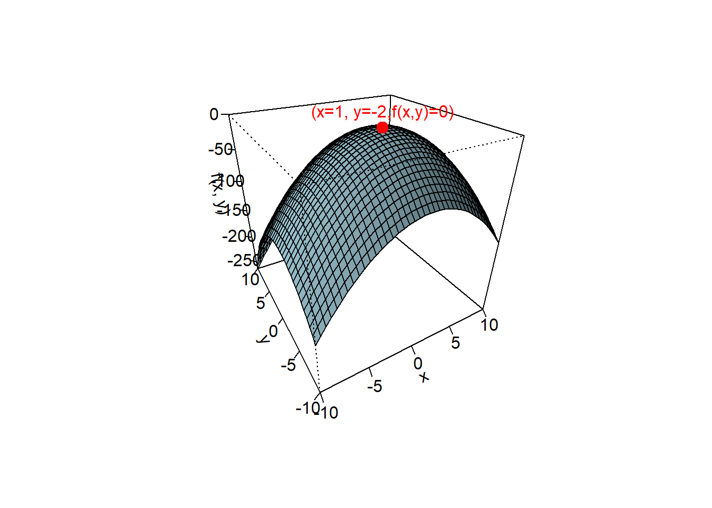

Funções são blocos de código que podem ser chamados para realizar uma tarefa específica
Elas facilitam a organização do código, promovem a reutilização e tornam o código mais organizados.
As funções permitem-lhe reduzir a duplicação de código, automatizando uma tarefa generalizada a ser aplicada recursivamente.
Dica: você deve considerar escrever uma função sempre que copiar e colar um bloco de código mais de duas vezes
Algumas funções do pacote base
x =sample(1:5,5,replace = T) # função para selecionar 5 números entre 1 e 10. Com reposiçãox
[1] 2 1 2 3 2
length(x) # comprimento x. Tamanho da amostra
[1] 5
mean(x) # média de x
[1] 2
var(x) # variância de x
[1] 0.5
sd(x) # desvio padrão x
[1] 0.7071068
summary(x) # algumas estatísticas de x
Min. 1st Qu. Median Mean 3rd Qu. Max.
1 2 2 2 2 3
table(x) # tabela de frequência
x
1 2 3
1 3 1
sort(x,decreasing = F) # organizar os dados de forma crescente
[1] 1 2 2 2 3
Criando funções
Para definir uma função em R, você usa a palavra-chave function seguida pelos parâmetros/argumentos da função e o corpo da função
name <-function(arguments) { body # o que a função irá realizar com os argumentosreturn(objeto que guarda o resultado final)}ouname <- \(arguments) { body # o que a função irá realizar com os argumentosreturn(objeto que guarda o resultado final)}
Funções são objetos, assim como vetores são objetos.
De forma geral, as funções podem ser divididas em três partes:
O formals(), a lista de argumentos que controlam como você chama a função.
O body(), o código dentro da função.
O environment(), a estrutura de dados que determina como a função encontra os valores associados aos nomes.
Embora os formals() e o body() sejam especificados explicitamente quando você cria uma função, o environment() é especificado implicitamente, com base em onde você definiu a função.
O environment() da função sempre existe, mas só é impresso quando a função não está definida no ambiente global.
media =function(x){ media_x =sum(x)/length(x)return(media_x)}y =sample(1:100,20,replace=T)media(y)
[1] 43.8
mean(y)
[1] 43.8
Função para fazer uma correspondência entre o número e o dia da semana
dia_semana <-function(numero_dia) { dia <-switch( numero_dia,"1"="Domingo","2"="Segunda-feira","3"="Terça-feira","4"="Quarta-feira","5"="Quinta-feira","6"="Sexta-feira","7"="Sábado" )return(cat("O dia correspondente ao número", numero_dia, "é", dia, "\n"))}dia_semana(2)
O dia correspondente ao número 2 é Segunda-feira
Argumentos Faltantes
A função missing em R é usada para verificar se um argumento foi fornecido a uma função.
Isso é particularmente útil quando você deseja definir um comportamento padrão ou tomar decisões com base na presença ou ausência de argumentos.
# Função para somar dois números com valores padrãosoma_com_default <-function(a, b) {if (missing(a)) { a <-0 }if (missing(b)) { b <-0 }return(a + b)}# Testando a função com diferentes combinações de argumentosprint(soma_com_default(3, 5)) # Ambos os argumentos fornecidos: 8
[1] 8
print(soma_com_default(3)) # Apenas 'a' fornecido: 3
[1] 3
print(soma_com_default(b =5)) # Apenas 'b' fornecido: 5
Observe como o argumento size é definido na função sample
sample
function (x, size, replace = FALSE, prob = NULL)
{
if (length(x) == 1L && is.numeric(x) && is.finite(x) && x >=
1) {
if (missing(size))
size <- x
sample.int(x, size, replace, prob)
}
else {
if (missing(size))
size <- length(x)
x[sample.int(length(x), size, replace, prob)]
}
}
<bytecode: 0x000001eea136f6d8>
<environment: namespace:base>
Argumentos padrão
A função pode ser construída com argumentos pré-definidos
media =function(x =c(1,2,3,4)){return( sum(x)/length(x)) }media()
[1] 2.5
Funções primitivas
Há uma exceção à regra de que uma função possui três componentes. Funções primitivas, como sum()e [, chamam o código C diretamente.
sum
function (..., na.rm = FALSE) .Primitive("sum")
`[`
.Primitive("[")
Essas funções existem principalmente em C, não em R, então seus formals(), body()e environment()são todos NULL:
… dot,dot,dot
Na definição de uma função, você pode usar três pontos (...) para indicar que a função aceita argumentos adicionais.
Esses argumentos adicionais não precisam ser explicitamente listados na definição da função
Esses argumentos adicionais geralmente são passados para outras funções dentro do corpo da função.
No exemplo abaixo, ... permite a passagem de argumentos adicionais, como na.rm para remover valores ausentes ao calcular a média.
media_ponderada <-function(valores,pesos,...) {# Calcula a média ponderada resultado <-sum(valores * pesos,...) /sum(pesos,...)return(resultado)}media_ponderada(c(1,2,NA),c(1,2,3))
[1] NA
media_ponderada(c(1,2,NA),c(1,2,3),na.rm=T)
[1] 0.8333333
on.exit
A função on.exit é usada para especificar código que deve ser executado quando a execução de uma função é concluída
Frequentemente usada para garantir que determinadas ações sejam realizadas antes que a função termine, independentemente de como ele termina
No exemplo a seguir vamos trocar de diretório
names_wd_atual <-"colocar caminho"# diretório atualwd_atual <-setwd(names_wd_atual)criar_grafico <-function() {x11() # abrindo nova janela para a figura new_wd <-paste0(wd_atual,"/Figuras/figura_exemplo_on_exit.jpg")jpeg(new_wd) # salvando figura no novo diretórioplot(1:10, main ="Meu Gráfico", ylab ="Valores")# Configura on.exit para fechar o dispositivo gráfico ao sairon.exit({dev.off()cat("Fechando o dispositivo gráfico\n")setwd(wd_atual) # voltando para o diretório atualcat("voltando para o diretório atual\n") }, add =TRUE)}# Chama a funçãocriar_grafico()
Formas de Funções
Embora tudo o que acontece em R seja resultado de uma função, nem todos as funções são formuladas da mesma forma.
Existem quatro formas de funções:
Prefix Functions
Infix Functions
Replacement Functions
Special functios
Prefix Functions
São as funções padrão ou regulares, identificadas por um nome seguido de argumentos entre parênteses.
media_ponderada <-function(x,peso=c(1,1,1),...)return(sum(peso*x,...)/sum(peso,...))media_ponderada(c(1,2,3)) # o nome da função vem antes de seus argumento
[1] 2
Infix Functions
O nome da função fica entre seus argumentos
As formas infixas são usadas para muitos operadores matemáticos e para funções definidas pelo usuário que começam e terminam com %
[1] -1
[1] 5
[1] 6
[1] 0.6666667
x <-c(1,2,3,4,5)6%in% x # o número 6 pertence ao conjuto x?
[1] FALSE
x <-c(1,2,3,4,5)2%in% x # o número 2 pertence ao conjuto x?
[1] TRUE
mat1 =matrix(c(1,2,3,4),2,2)mat2 =matrix(c(1,2,3,4),2,2)mat1 %*% mat2 # multiplicação de matriz
[,1] [,2]
[1,] 7 15
[2,] 10 22
Definindo nova função infix
`%+%`<-function(a, b) paste(a, b,sep="-")"new "%+%"string"
[1] "new -string"
A biblioteca magrittr adiciona o operador pipe, que permite usar a saída de uma função como entrada de outra função
require(magrittr) # pacote para usar %>%x <-c(1,2,3,4)desvio_padrao =sqrt( var(x) )desvio_padrao =var(x) %>%sqrt()desvio_padrao =var(x) |>sqrt() # pacote base
Os colchetes transformam o pipe no que é quase uma função anônima
1:5%>% {(. +1) /2} # 1:5 são utilizados no lugar do ponto
[1] 1.0 1.5 2.0 2.5 3.0
Replacement Functions
Estas funções são frequentemente usadas para atribuir valores a variáveis ou modificar objetos existentes.
'function_name<-'<-function(x, additional arguments, value) { function body }
Nomear elementos do vetor com a função names
x =c(1,2,3,4)names(x) <-paste0("n",1:length(x))x
n1 n2 n3 n4
1 2 3 4
Mudar o segundo elemento do vetor
"replace_second<-"=function(x,value){ x[2] <- value x}x =c(1,2,3,4)replace_second(x) <-0Lx
Funções especiais muitas vezes desempenham papéis específicos, como manipulação condicional, filtragem de dados e manipulação de strings.
Ferramentas de controle de fluxo
if (cond) true (`if`(cond, true))
if (cond) true else false (`if`(cond, true, false))
for(var in seq) action (`for`(var, seq, action))
while(cond) action (`while`(cond, action))
repeat expr (`repeat`(expr))
next (`next`())
break (`break`())
Condições
O sistema de condições fornece um conjunto de ferramentas que permitem ao autor de uma função indicar que algo incomum está acontecendo
O autor da função sinaliza condições com funções como stop() (para erros), warning() ( para avisos) e message() (para mensagens)
Compreender o sistema de condições é importante porque muitas vezes você precisará desempenhar as duas funções: sinalizar as condições das funções que você cria e lidar com as condições sinalizadas pelas funções que você chama.
Erro (Stop Condition):
A função stop() é usada para sinalizar um erro. Quando um erro é sinalizado, a execução do código é interrompida e uma mensagem de erro é exibida.
calcular_media <-function(x) {if (length(x) ==0) {stop("Erro: O vetor está vazio.") }if (is.numeric(x) == F) {stop("Erro: vetor deve ser do tipo numérico") }return(mean(x))}calcular_media(1:4)
[1] 2.5
calcular_media <-function(x) {if (length(x) ==0) {stop("Erro: O vetor está vazio.") }if (is.numeric(x) == F) {stop("Erro: vetor deve ser do tipo numérico") }return(mean(x))}calcular_media(c(1,2,3,"l"))# Error in calcular_media(c(1, 2, 3, "l")) : # Erro: vetor deve ser do tipo numérico
Aviso (Warning Condition):
A função warning() é usada para sinalizar um aviso. Um aviso não interrompe a execução do código, mas alerta o usuário sobre algo que pode ser problemático.
calcular_raiz_quadrada <-function(x) {if (any(x <0)) {warning("Alguns valores são negativos. A raiz quadrada de números negativos será tratada como NaN.") }return(sqrt(x))}# Exemplo de usoresultado <-calcular_raiz_quadrada(c(4, -9, 16))print(resultado)
[1] 2 NaN 4
Mensagem Informativa (Message Condition):
A função message() é usada para sinalizar mensagens informativas. Essas mensagens são úteis para fornecer informações adicionais durante a execução do código.
calcular_cubo <-function(x) {message("Calculando o cubo dos valores.")return(x^3)}# Exemplo de usoresultado <-calcular_cubo(c(2, 3, 4))print(resultado)
[1] 8 27 64
Ignorando as condições
Ao lidar com condições em R, você pode usar as funções try(), suppressWarnings(), e suppressMessages() para controlar o tratamento de erros, avisos e mensagens.
try()
A função try() é usada para avaliar expressões e manipular erros sem interromper a execução do código. Ela retorna um objeto que você pode verificar usando inherits() para determinar se ocorreu um erro.
x =c()mean(x)
[1] NA
resultado <-try(mean(), silent =TRUE)resultado
[1] "Error in mean.default() : argumento \"x\" ausente, sem padrão\n"
attr(,"class")
[1] "try-error"
attr(,"condition")
<simpleError in mean.default(): argumento "x" ausente, sem padrão>
if (inherits(resultado, "try-error")) { # verifica se o objeto resultado é da classe "try-errorcat("Erro: Ocorreu um problema ao calcular a média.\n")}
Erro: Ocorreu um problema ao calcular a média.
suppressWarnings() para Suprimir Avisos:
A função suppressWarnings() é usada para executar uma expressão e suprimir os avisos que ela pode gerar.
x =c()mean(x)
Warning in mean.default(x): argumento não é numérico nem lógico: retornando NA
[1] NA
suppressWarnings(mean(x))
[1] NA
suppressMessages() para Suprimir Mensagens:
A função suppressMessages() é usada para executar uma expressão e suprimir as mensagens informativas que ela pode gerar.
calcular_cubo <-function(x) {message("Calculando o cubo dos valores.")return(x^3)}# Exemplo de usoresultado <-suppressMessages(calcular_cubo(c(2, 3, 4)))resultado
[1] 8 27 64
Invocando funções
Normalmente você chama uma função colocando seus argumentos, entre parênteses, após seu nome: mean(1:10, na.rm = TRUE)
Porém, em algumas situações você tem uma lista de argumentos que deseja passar para uma função.
A função do.call em R é usada para chamar uma função e passar argumentos para ela na forma de uma lista
Exemplo 1
# Lista de argumentosargs <-list(1, 2, 3, 4, 5)# Usando do.call para chamar a função sumresultado <-do.call(sum, args)print(resultado) # Isso imprimirá 15
[1] 15
Exemplo 2
Você pode usar do.call com funções que têm parâmetros nomeados
# Definindo uma função que cria uma sequênciacriar_sequencia <-function(inicio, fim, passo =1) {return(seq(from = inicio, to = fim, by = passo))}# Lista de argumentos com parâmetros nomeadosargs <-list(inicio =1, fim =10, passo =2)# Usando do.call para chamar a função criar_sequenciasequencia <-do.call(criar_sequencia, args)print(sequencia)
[1] 1 3 5 7 9
Exemplo 3
Um uso comum de do.call é combinar listas de data frames:
# Criando dois data framesdf1 <-data.frame(a =1:3, b =4:6)df2 <-data.frame(a =7:9, b =10:12)# Lista de data framesdfs <-list(df1, df2)# Usando do.call com rbind para combinar os data framesdf_combinado <-do.call(rbind, dfs)print(df_combinado)
a b
1 1 4
2 2 5
3 3 6
4 7 10
5 8 11
6 9 12
# Criando dois data framesdf1 <-data.frame(a =1:3, b =4:6)df2 <-data.frame(c =7:9, d =10:12)# Lista de data framesdfs <-list(df1, df2)# Usando do.call com rbind para combinar os data framesdf_combinado <-do.call(cbind, dfs)print(df_combinado)
a b c d
1 1 4 7 10
2 2 5 8 11
3 3 6 9 12
Exemplo 4
Selecionar funções baseada em condições
vectors <-list(c(1, 2, 3), c(4, 5, 6))op ="SOMA"if (op =="SOMA") { result <-do.call("+", vectors)} elseif(op !="SOMA") { result <-do.call("*", vectors)}result
[1] 13
attr(,"gradient")
x
[1,] 10
attr(,"hessian")
, , x
x
[1,] 4
f_deriv(2) é o valor da função no ponto ( x = 2 ):
f(2) = 2 \cdot 2^2 + 2 \cdot 2 + 1 = 8 + 4 + 1 = 13
attr(f_deriv(2), "gradient") é a primeira derivada no ponto ( x = 2 ):
f'(x) = 4x + 2 \quad \Rightarrow \quad f'(2) = 4 \cdot 2 + 2 = 10
attr(f_deriv(2), "hessian") é a segunda derivada (constante):
f''(x) = 4
Também podemos encontrar o ponto de máximo e mínimo de uma função através do comando optimise.
Encontrando o valor de x que minimza a função f(x)=2x^2 + 2x+1
# criando a função f_x =function(x){ fx =2*x^2+2*x+1return(fx)}# #forma 1# min_x = optimise(f_x,maximum = F,interval = c(-100,100)) # encontrando o valor de x que minimza a função 2*x^2 + 2*x+1# #forma 2min_x =optimise(function(x){2*x^2+2*x+1}, #função anônimamaximum = F,interval =c(-100,100) ) # encontrando o valor de x que minimza a função 2*x^2 + 2*x+1min_x
$minimum
[1] -0.5
$objective
[1] 0.5
f_x(min_x$minimum) # valor aplicado no ponto
[1] 0.5
x =seq(-20,20,0.5) # criando uma sequênciaplot( x,f_x(x),xlab ="x",ylab ="f(x)",col =ifelse(x == min_x$minimum, "red", "black") ) # plotando o gráfico de x por f(x)abline(v=min_x$minimum,h =f_x(min_x$minimum) ) # identificando os pontos

Encontrando o valor de x que maximiza a função g(x)=-6x^2 + 5x+1
g_x =function(x){ gx =-6*x^2+5*x+1return(gx)}# #forma 1# max_x = optimise(g_x,# maximum = T,# interval = c(-100,100)) # encontrando o valor de x que maximiza a função -6*x^2 + 5*x+1#forma 2max_x =optimise(function(x){-6*x^2+5*x+1}, #função anônimamaximum = T,interval =c(-100,100)) # encontrando o valor de x que maximiza a função -6*x^2 + 5*x+1max_x
$maximum
[1] 0.4166667
$objective
[1] 2.041667
g_x(max_x$maximum) # valor aplicado no ponto
[1] 2.041667
x =seq(-20,20,0.5) |>c(max_x$maximum) |>sort() # criando uma sequênciaplot( x,g_x(x),xlab ="x",ylab ="g(x)",col =ifelse(x == max_x$maximum, "red", "black") ) # plotando o gráfico de x por g(x)abline(v=max_x$maximum,h =f_x(max_x$maximum) ) # identificando os pontos

Encontrando os valores de x e y que maximizam a função f(x,y)=-(x-1)^2-(y+2)^2.
fxy <-function(vetor) { x <- vetor[1] y <- vetor[2]-( (x -1)^2+ (y +2)^2 )}ponto_max =optim(par =c(0,0), # valores iniciaisfn = fxy,control =list(fnscale=-1) # para encontrar o ponto de máximo:fnscale=-1 )ponto_max
$par
[1] 0.9998895 -2.0000124
$value
[1] -1.235418e-08
$counts
function gradient
69 NA
$convergence
[1] 0
$message
NULL
x = y =seq(-10,10,0.5) # criando uma sequência de pontoslength(x)
[1] 41
f_xy =outer(x, y,function(x, y) {-((x -1) ^2+ (y +2) ^2) })# gráfico 3dsuper =persp( x, y, f_xy,col ="lightblue", # cor da superfície shade =0.4,ticktype ="detailed", # colocar os números nos eixosxlab ="x",ylab ="y",zlab ="f(x, y)",phi =30, # rotacionar a imagemtheta =-30, # rotacionar a imagem)x0 = ponto_max$par[1]y0 = ponto_max$par[2]z0 = ponto_max$value # fxy(c(x0,y0))# Converte o ponto (x0, y0, z0) para coordenadas 3dponto <-trans3d(x0, y0, z0, super)# Adiciona o ponto no gráficopoints(ponto, col ="red", pch =19, cex =1.5)# Adiciona um texto com coordenadastext(ponto, labels ="(x=1, y=-2,f(x,y)=0)", pos =3, col ="red")

Lista de funções
Funções em uma lista
funs <-list(half =function(x) x /2,mult =function(x) x *2)funs$mult(10)
[1] 20
Atividade
Escreva uma função que, dado um número de 1 a 12, imprima o nome do mês do ano correspondente.
O coeficiente de variação (cv) é uma forma de medir a variabilidade dos dados. Crie uma função que calcule o coeficiente de variação de um vetor numérico. Crie uma condição para que se o vetor não for do tipo numeric, não faça o cálculo
Crie uma função para criar um objeto de uma classe chamada “Livro” que representa um livro com atributos como autor e ano de publicação.
Considere a seguinte função: f(x) = (x - 3)^2 + 5 se 0=<x<10 e f(x) = 54 se x>=10. Escreva uma função considerando: erro para entrada do tipo não numérico e erro para entrada de valores negativos.
Considere os argumentos x e y. Use o conceito de função infix para saber se x é divisível por Y.
Crie um exemplo usando a função try. Se for erro, atribua NaN ao objeto da class try-error e imprima mensagem de erro
Escreva funções para:
Calcular área do quadrado. Use “lado” como argumento da função.
Calcular área do triângulo. Use a “base” e “altura” como argumentos da função
Calcular área, perímetro e diâmetro do círculo. Use “raio” como argumento da função. Retorne um data frame com a primeira coluna tendo os nomes das medidas e a segunda coluna os respectivos valores.